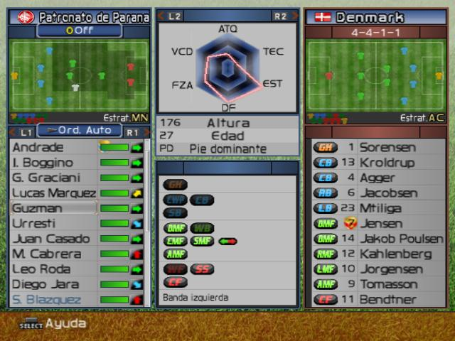

i see lots of people that complain about perfectionism these days. i hear a lot that it's a toxic mindset and how being a perfectionist is making us miserable. my friends say it's preventing them from enjoying their lives.
but i would like to disagree
i believe that people have misunderstood the true definition of perfection and that's why they find themselves miserable and blame perfectionism for it. but that's not perfection, it's something else. maybe obsession.
so let me share my own understanding of perfection.
i believe that our ultimate goal in life is to maximize. maximizing things that matter to us: happiness, love, experiences, money, ...
my definition is to maximize all of the things that matter to us, without discrimination.
we ususally forget that. we get obsessed with only one or few aspects of our lives. we spend lots of time to make money, but we forget to spend it on our hobbies. we spend lots of energy on making academic success, but we forget to spend any for our health. we spend lots of resources on getting affirmation from others, but forget to love themselves in their heart. and so on...
the bold analogy i have in my mind is the hexagon stats from video games:
if you are a gamer, you've probably saw hexagons like this a lot. for example in a footbal game, each player stats is mapped to a hexagon with each vertic symbolizing as a different skill like stamina, shooting, dribbling, passing, ...
in these games when you want to compare players with each other, you look at the total area that skills of a player are making. sometimes a player can be very good at one skill, but a total disaster in another one. so the tricky thing is how to balance things out to maximize the area. the thing is no player can't be 100% good at all skilles. he has a limited time and he has to choose which skills to practice on. same with our lives. we have limited points (time, energy, money, ...) in our total life time for assigning them to each vertic. so maximizing one of them is a fatal mistake that lower the other ones which results in low area.
so back to my definition of perfection. the problem in our lives is that we tend to forget this big picure. we get obsessed with one side of our life's hexagon and lose the other sides. we aim for perfection in limited box of one aspect (university, relationships, money, work, health, ...) and make ourselves miserable. then blame the notion of perfectionism, while true perfectionsim has been to think out of the box of a single aspect in the first place.